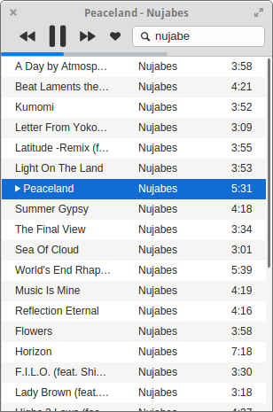

Harmony
Music player with simple UI and cloud compatibility
Play tracks from all your favorite services in the same app
How to install on Elementary OS
Replace /64 with /32 if using 32bit system
sudo apt-get update
sudo apt-get install harmony --force-yes -y
Play your music from everywhere. No need to install plugins.
Resize the window as you wants, it will follow you.
Use the mini player in the system sound indicator to control your music without interrupting you.

Update your Now Playing status and scrobble tracks to Last.fm.